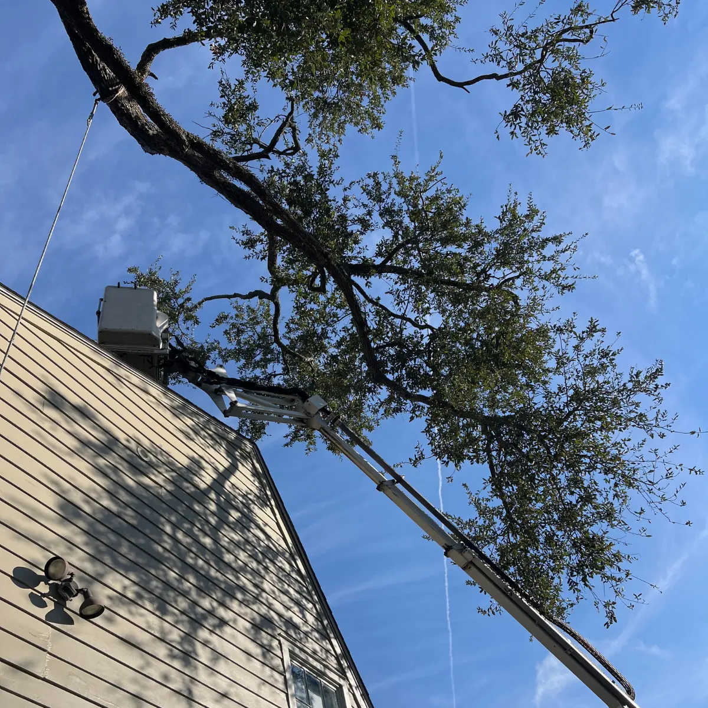
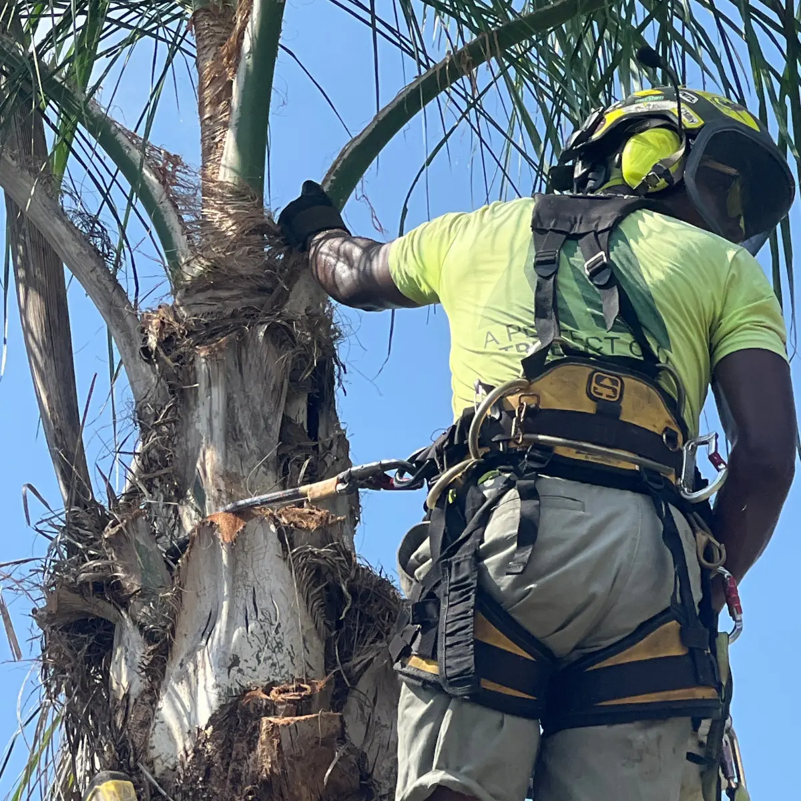
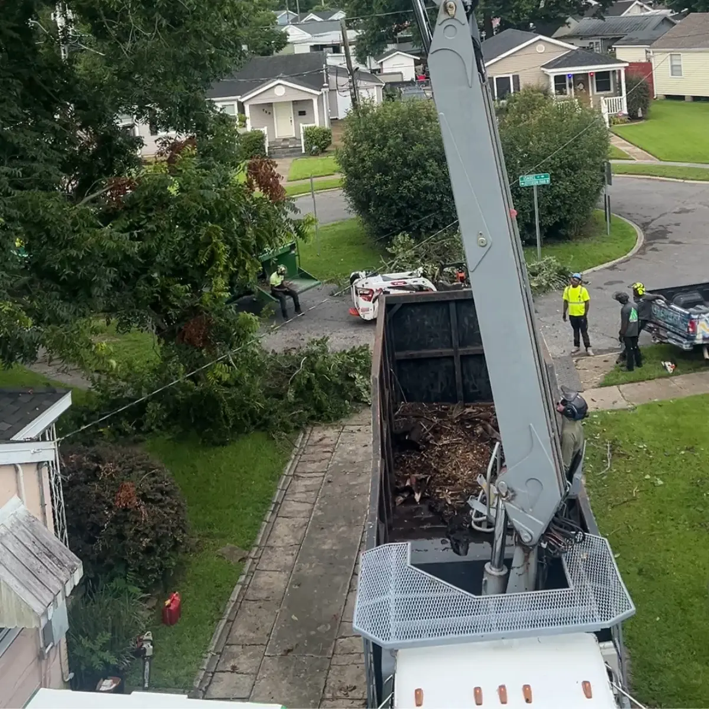
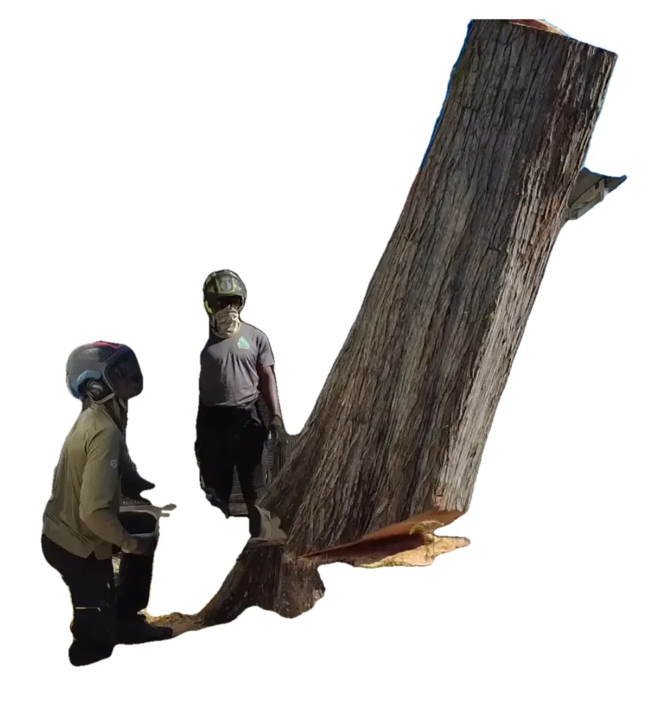

Hazardous Tree Assessment for NOLA Properties
Urgent or unsafe? Call (504) 732-0779


Expert Arborist Services Tailored to You
A Perfect Cut Tree provides comprehensive hazardous tree assessment services in the New Orleans, LA area.
Our team of professional arborists has the knowledge and expertise to inspect your trees, accurately analyzing their health and stability, as well as any potential basic tree risks they may present. Well-maintained trees significantly enhance curb appeal, contributing to a home’s market value and overall visual appeal. Our hazard tree assessment services are unparalleled in their expertise, from accurately diagnosing weak branches or trunks to recommending the best methods of risk mitigation.
We have a remarkable reputation for our hazardous tree removal and trimming procedures, and we always provide premium advice on how to avoid similar issues down the line.
Contact us today for a on our hazardous tree assessment in NOLA!

What is Tree Risk Assessment?
Tree risk assessment is a crucial process that involves evaluating trees for potential hazards that could lead to their failure and cause harm to people or property. This assessment aims to identify defects in the tree’s structure, such as cracks, decay, or disease, which could undermine its stability. The primary purpose of tree risk assessment is to prevent accidents and ensure a safe environment for everyone around. By identifying potential hazards early, property owners can take appropriate measures to mitigate risks and maintain the health and safety of their trees.

Understanding the Importance of Tree Risk Assessment
Protecting the people and properties around us is an essential task, which makes hazardous tree assessment a vital process.
This involves evaluating trees to see if they pose any danger of toppling or causing destruction during natural disasters like storms, gales, or earthquakes.
A certified arborist or trained tree risk assessor has the expertise to spot potential risks by taking into account elements and conditions within the environment.
Trees that have passed away due to illness or deterioration can be especially dangerous since they may have structural issues including fissures and decay plus broken branches, adding up even more peril for those living nearby.
Not only does assessing hazard trees protect people and property from potential damage, but they also promote the continued health and safety of urban forests.
By determining hazardous trees that are too close to buildings, power lines, or other structures, and then promptly removing them, certified arborists can preserve healthy trees while allowing new ones to grow in their place.

Identifying Signs of a Hazardous Tree
There are several signs that can indicate a tree may be hazardous and in need of further tree risk assessment by a qualified arborist or tree risk assessor.
Regular inspections and maintenance are crucial for ensuring tree health, preserving the beauty of landscapes, and preventing costly damage.
Some of these signs include:
- Dead or declining branches: Branches that are dead, broken, or hanging on by a small strip of bark can be a sign of a hazardous tree.
- Decay: Decay in the trunk or branches can weaken the tree and make it more likely to fail in high winds or during a storm.
- Cracks and splits: Large cracks in the trunk or branches can indicate that the tree is structurally unsound and may be at risk of failure.
- Leaning tree: A tree that is significantly leaning in one direction can indicate that the roots are not adequately anchored, and the tree may be at risk of falling.
- Root damage: Exposure of roots or damage to the root system can weaken the tree’s stability and increase the risk of failure.
- Crowded or competing trees: Trees growing in close proximity to one another can compete for resources and light, which can cause stress and decline.
- Inadequate clearance: Trees that are too close to buildings, power lines, or other structures can pose a risk of damage in the event of failure.
- Excessive growth: Fast-growing trees with a lot of branches and foliage can be more prone to breaking and falling in high winds.

Factors that Contribute to Hazardous Tree Conditions
There are several factors that can contribute to hazardous tree conditions. Some of the most common include:
- Tree species: Some species of trees are naturally more prone to certain types of structural weaknesses or diseases.
- Age: As trees age, they can become more vulnerable to decay, disease, and structural weaknesses. Older trees are also more susceptible to wind damage and are more likely to fall during a storm.
- Environmental conditions: Adverse environmental conditions such as soil compaction, drought, and extreme temperatures can stress trees and increase the risk of failure.
- Site conditions: The location of a tree can play a role in its health and stability. Trees growing on slopes or in areas with poor drainage can be more susceptible to failure due to soil instability.
- Pests and diseases: Pests and diseases can weaken trees and make them more prone to failure. Some pests, such as bark beetles, can kill trees within a few months, while others, such as borers, can cause a slow decline over many years.
- Human activities: Human activities such as construction, excavation, or grading can disrupt the root system and weaken the stability of trees. In addition, improper pruning or damage to the trunk or roots can also increase the risk of failure.
- Natural events: Natural events such as storms, high winds, and earthquakes can cause trees to fail, even if they were healthy and structurally sound before the event.

The Tree Risk Assessment Process
The tree risk assessment process typically begins with a visual inspection conducted by a certified arborist. During this inspection, the arborist examines the tree’s roots, trunk, branches, and overall health condition to identify any potential problems.
This thorough evaluation helps in detecting signs of structural defects, disease, or other issues that could compromise the tree’s stability.
In some cases, advanced technology such as sonic tomography is used to detect internal defects or weaknesses that are not visible from the outside. This comprehensive approach ensures that all potential hazards are identified and addressed.

3 Types of Tree Risk Assessments
Tree risk assessments can be categorized into three levels:
- A Limited Visual Assessment is a quick inspection to spot obvious hazards like dead branches or visible cracks, done from a specific, limited viewpoint.
- A Basic Tree Risk Assessment involves a more detailed examination of the tree’s roots, trunk, branches and crown for structural defects or potential risks through a 360-degree visual assessment from the ground.
- The Advanced Tree Risk Assessment is the most detailed evaluation, using techniques like aerial inspections, tissue sampling, resistance drilling, and tomography to assess the tree’s condition thoroughly.
Each level of assessment provides valuable insights into the tree’s health and stability, helping property owners make informed decisions.

Tree Risk Mitigation Strategies
After completing a tree risk assessment, our certified arborist will provide recommendations for mitigating any potential hazards identified. These strategies may include pruning or removing branches that pose a risk, installing support systems to stabilize the tree, or treating the tree for disease or pests.
In some cases, tree removal may be necessary if the tree poses a significant risk to people or property.
The goal of these mitigation strategies is to address potential hazards proactively, ensuring the safety of the surrounding environment while preserving the health of the trees.

What to Expect from Our Services
A Perfect Cut Tree offers comprehensive tree risk assessments to help property owners identify and mitigate potential hazards. Our services include:
- Visual inspections of trees to identify potential hazards.
- Use of advanced technology, such as sonic tomography, to detect internal defects or weaknesses.
- Recommendations for mitigating potential hazards, including pruning, removal, or treatment.
- Installation of support systems to stabilize trees.
- Tree removal services if necessary.
By choosing us for your tree risk assessment needs, you can trust that your property and loved ones are protected from potential hazards.
Our arborists are dedicated to providing expert tree care and risk assessment services to ensure a safe and healthy environment for everyone.

Protect Your Property with Hazardous Tree Assessment Services
Don’t wait until it’s too late, protect your home, business, or community with professional hazardous tree assessment services. Certified arborists can identify trees that pose a risk and provide expert solutions to prevent damage to buildings, vehicles, and public spaces.
Our services go beyond inspecting individual trees. We offer full landscape assessments, recommend strategies for reducing risks, and help preserve healthy trees wherever possible.
Take proactive steps to ensure safety and peace of mind. Contact us today to schedule a hazardous tree assessment and let us create a management plan for your property.
Service Areas
- Tree risk assessment in New Orleans, LA
- Tree risk assessment in Metairie, LA
- Tree risk assessment in Kenner, LA
- Tree risk assessment in River Ridge, LA
- Tree risk assessment in Harahan, LA
- Tree risk assessment in Destrehan, LA
What to Photograph From a Safe Distance
Photos and video show us the tree, the property around it, how we would reach it, and any visible hazards.


Tree down or a limb on a line?
Skip the photos and call. Calls are answered 24/7.
(504) 732-0779Office hours: Monday to Friday 7 AM to 5 PM, Saturday 7 AM to 3 PM, closed Sunday.
Other Tree Care Services

Tree Trimming
Our tree trimming service enhances tree health, improves curb appeal, and reduces risk by removing dead or overgrown branches with precision and care.
Get My Arborist Review
Emergency Tree Removal and Cleanup
When storm damage or a fallen tree puts your property at risk, our crew handles safe removal and thorough cleanup.
Get My Arborist Review
Consulting & Construction Permitting
We help homeowners and contractors navigate local tree regulations, offering expert advice and handling permits for construction projects involving tree removal or preservation.
Get My Arborist Review
Ready to Show Us Your Tree?
Show us the tree. An arborist reviews what you send. Photos give us a first look. Some trees need an in-person visit before we can make a final recommendation.